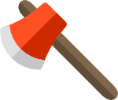
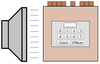
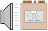

ABC__
La serrure du coffre ci-dessous est constituée de troisquatre pièces métalliques dont la position varie.
À l'aide de rayons X, on peut mesurer l'épaisseur totale de métal sur chaque rangée, indiquée sur la droite.
Détruisez autant de coffres que vous voulez pour comprendre le mecanisme interne
Puis, essayez de trouver la combinaison d'un coffre sans le détruire.
Avant de chercher le code d'un coffre on doit comprendre comment on peut se servir des rayons X. On commence par détruire le coffre et analyser le résultat des mesures.
Quand on lit l'épaisseur ligne par ligne de haut en bas on remarque qu'elle vaut initialement 8 et qu'elle baisse plusieurs fois. Au passage de la 2e à la 3e ligne l'épaisseur totale baisse de 3, ce qui indique qu'une pièce d'épaisseur 3 s'est arrêtée. Comme les pièces dépassent vers le haut, on sait que la pièce d'épaisseur 3 est celle de droite, donc le code est de la forme * * 2.
Au passage de la 4e à la 5e ligne, l'épaisseur totale baisse de 4 donc la pièce d'épaisseur 4 s'est arrêtée, donc sa profondeur est 4. Finalement, l'épaisseur totale passe de 1 à 0 au niveau de la 7e ligne, donc la pièce de milieu a profondeur 7. Cela correspond bien à ce qu'on voit dans le coffre cassé à la hache : le code était 4 7 2. Maintenant qu'on a compris, on essaie un nouveau coffre :
Avant de résoudre un coffre on détruit un pour comprendre. On voit que chaque colonne a une pièce en haut et une en bas de façon que la somme des profondeurs est toujours 9. .
L'épaisseur totale baisse de 3 au passage de la 2e à la 3e ligne, ce qui montre que la pièce en haut de la colonne d'épaisseur 3 (celle de droite) a une profondeur de 2. L'épaisseur totale baisse ensuite de 2 au niveau 3, donc la pièce d'épaisseur 2 a une profondeur de 3. De la même manière, la pièce en haut de la colonne d'épaisseur 1 a une profondeur de 4. Comme l'épaisseur totale commence à augmenter il faut changer de méthode, donc on regarde la profondeur de bas en haut. Ainsi, en montant, l'épaisseur totale baisse de 4 au passage de la 3e à la 4 ligne de bas en haut, donc la pièce de bas de la colonne d'épaisseur 4 a une profondeur de 3. Comme la somme des profondeurs des pièces en haut et en bas est toujours 9, la piève en haut a une proonfeur de 9-3=6. Passons maintenant à la résolution proprement dite :
En cassant plusieurs coffres, on remarque que la fermeture du coffre est formée de 4 colonnes ayant chacune une pièce en haut et une en bas de façon que la somme des profondeurs vaut 9.
Voici la figure des épasseurs totales, dont ont a caché le milieu avec une bande noire pour se concentrer sur la partie haute et basse. On a colorié les rectangles comme suit :Chaque baisse de l'épaisseur totale en allant de haut en bas indique qu'une pièce s'arrête. Les rectangles bleu et rouge (en haut) indiquent que deux pièces d'épaisseur 3 s'arrêtent à une profondeur de 4 et 5, respectivement.
Chaque augmentation d'épaisseur en allant de bas en haut montre que la partie basse d'une pièce commence, donc les rectangles vert et violet (en bas) indiquent qu'on a deux colonnes d'épaisseur 2 dont les parties basses ont comme profondeur 2 et 3, respectivement. Comme la somme des profondeurs est 9, les pièces correspondantes en haut ont comme profondeur 6 et 7, respectivement.
Pour finir on doit essayer chacun des codes possibles en permutant les pièces de même épaisseur : 4675, 4765, 5674, 5764. Celui qui ouvre le coffre est 5764.
Certains systèmes cryptologiques sont cassés en utilisant des données apparamment peu importantes. Par exemple la consommation électrique des premières cartes bancaires variait lors du paiement, en alternant des moments de haute consommation avec des moments de basse consommation. En mesurant la consommation d'électricité en temps réel on pouvait lire la clé secrète. On dit que les attaques sont faite par des canaux auxiliaires.
 
